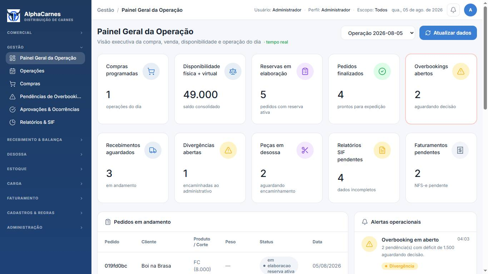
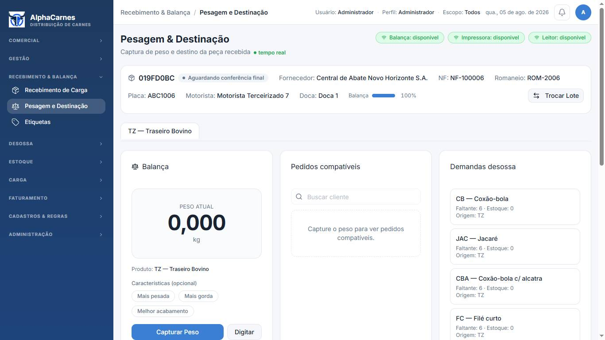
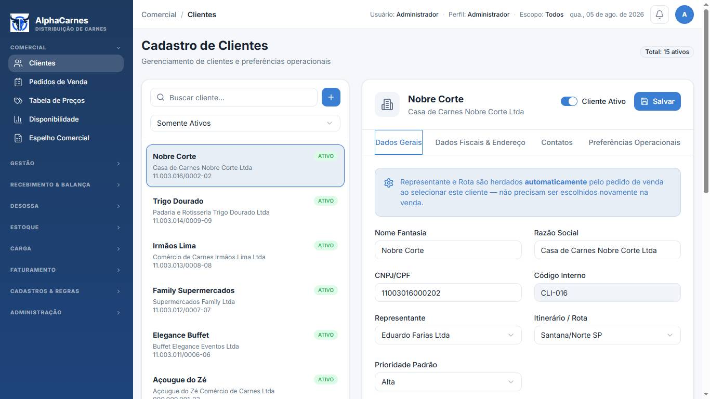
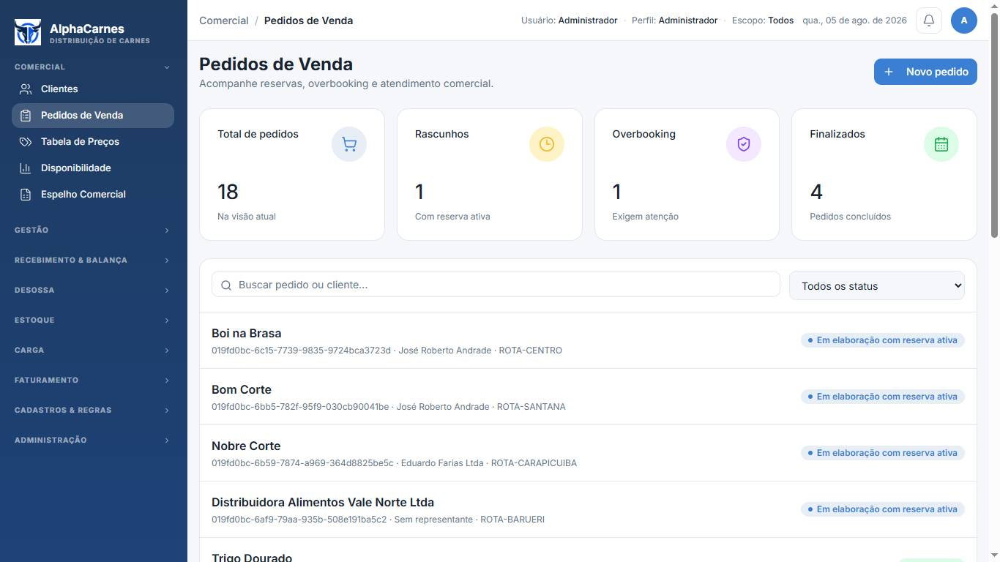

Decisão (05/08/2026): Direção A escolhida, incorporando o KPI strip da Direção B (faixa plana, sem sombra, valor 20px). Já aplicado nas páginas da Direção A abaixo.
Protótipo navegável (HTML puro, nada do app foi alterado) para escolher a direção do redesign do design system. As duas direções compartilham as mesmas fundações de densidade — controles compactos, dados em JetBrains Mono tabular, vocabulário completo de estados, datepicker e combobox próprios — e divergem no mundo visual. Compare as mesmas 4 telas em cada direção.
A identidade atual — sidebar azul em gradiente, primária azul — refinada: paleta de status re-harmonizada, contraste AA, elevação tokenizada, radii firmes, linhas de 36px.
ERP moderno tipo Linear/Attio: sidebar grafite plana, ação primária grafite, accent índigo só para seleção/foco, borda 1px como divisor, tags retangulares, linhas de 32px.
| Aspecto | Hoje | Proposta |
|---|---|---|
| KPIs do dashboard | 10 cards de ~170px em 2 linhas (metade do viewport) | 2 faixas de ~64px — dashboard inteiro cabe em 1 viewport HD |
| Linhas de tabela | ~56–64px, 6–8 linhas visíveis | 36px (A) / 32px (B) — 14–16 linhas visíveis |
| Números, códigos, moeda | Inter proporcional, desalinhado em colunas | JetBrains Mono tabular — colunas numéricas alinham verticalmente |
| Datepicker | Nativo do browser, destoante | Datepicker do DS com atalhos Hoje/Ontem, dd/mm/aaaa |
| Busca de cliente / produto | <select> nativo ou lista fixa | Combobox com busca e código do registro |
| Status | Texto cru sem acento + pill cinza; 19+ reimplementações ad-hoc | StatusPill único, 6 estados harmonizados + mapa de status de pedido |
| Alturas de controle | Mistura h-9 / h-10 / nativo | Grade única: 32/28px (A) / 30/26px (B) |
| Pedidos de venda | Lista de cards de ~77px por pedido | Tabela densa com representante, rota, itens e ação por linha |
| Estados de componente | Parciais (sem loading/error/readonly padronizados) | default · hover · focus · active · disabled · error · loading · readonly |
| Sombras | Sem tokens, uso disperso | 3 níveis tokenizados (B usa borda como divisor primário) |




docs/execucao/DECISOES.md antes da implementação.